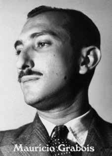

Maurício
Grabois
CIRCUNSTÂNCIAS DA MORTE
Segundo o Relatório Arroyo, Maurício Grabois era uma das quinze pessoas que se encontravam no acampamento da Comissão Militar na hora do ataque das Forças Armadas ocorrido em 25/12/1973, episódio conhecido como “Chafurdo de Natal”. No Relatório do Ministério da Marinha de 1993 (Arquivo CNV, Relatórios do Exército, Marinha e Aeronáutica, entregues ao Ministro da Justiça Mauricio Corrêa, em dezembro de 1993, NUP: 00092_000830_2012_05 p. 12) e no Relatório do CIE, Ministério do Exército (Arquivo Nacional, SNI: BR_DFANBSB_V8_AC_ACE_54730_86_002 p. 40) também consta esta data para a morte de Maurício.
Tal informação ainda é corroborada pelo depoimento do segundo tenente da Polícia Militar de Goiás, João Alves de Souza, prestado à Comissão Nacional da Verdade, em 20/02/2014, no qual ele confirma o nome de Maurício entre os mortos no “Chafurdo de Natal” (Arquivo CNV, Depoimento de João Alves de Souza, 20 de março de 2014, NUP 00092.000480/2014-31).
O Sargento Santa Cruz também declarou à CNV que Maurício morreu no dia 25/12/1973 (Arquivo CNV, Depoimento de João Santa Cruz Sacramento, 19 de novembro de 2013, NUP: 00092.002249/2013-09).
Sobre o possível local de sepultamento do guerrilheiro, em notícia do Jornal do Brasil de 17/10/1982 denominada “Coluna do Castello: Onde está Maurício Grabois”, há um relato de que o General Hugo Abreu teria admitido tê-lo enterrado na Serra das Andorinhas.
According to the Arroyo Report, Maurício Grabois was one of fifteen people who were at the Military Commission camp at the time of the Armed Forces attack that occurred on 12/25/1973, an episode known as “Christmas Wallowing”. In the 1993 Report of the Ministry of the Navy (CNV Archive, Reports of the Army, Navy and Air Force, delivered to the Minister of Justice Mauricio Corrêa, in December 1993, NUP: 00092_000830_2012_05 p. 12) and in the Report of the CIE, Ministry of the Army (National Archive, SNI: BR_DFANBSB_V8_AC_ACE_54730_86_002 p. 40) this date also appears for Maurício's death.
This information is further corroborated by the testimony of the second lieutenant of the Military Police of Goiás, João Alves de Souza, given to the National Truth Commission, on 02/20/2014, in which he confirms the name of Maurício among those killed in the “Chafurdo de Natal” (CNV Archive, Testimony of João Alves de Souza, March 20, 2014, NUP 00092.000480/2014-31).
Sergeant Santa Cruz also declared to the CNV that Maurício died on 12/25/1973 (CNV Archive, Testimony of João Santa Cruz Sacramento, November 19, 2013, NUP: 00092.002249/2013-09).
Regarding the possible burial place of the guerrilla, in a news item from Jornal do Brasil dated 10/17/1982 called “Castello Column: Where is Maurício Grabois”, there is a report that General Hugo Abreu admitted having buried him in Serra das Andorinhas.
Según el Informe Arroyo, Maurício Grabois era una de las quince personas que se encontraban en el campamento de la Comisión Militar en el momento del ataque de las Fuerzas Armadas ocurrido el 25/12/1973, episodio conocido como “Revuelco de Navidad”. En el Informe del Ministerio de la Marina de 1993 (Archivo CNV, Informes del Ejército, Armada y Fuerza Aérea, entregado al Ministro de Justicia Mauricio Corrêa, en diciembre de 1993, NUP: 00092_000830_2012_05 p. 12) y en el Informe de la CIE, Ministerio del Ejército (Archivo Nacional, SNI: BR_DFANBSB_V8_AC_ACE_54730_86_002 p. 40) esta fecha también aparece para la muerte de Mauricio.
Esta información es corroborada además por el testimonio del segundo teniente de la Policía Militar de Goiás, João Alves de Souza, presentado ante la Comisión Nacional de la Verdad, el 20/02/2014, en el que confirma el nombre de Maurício entre los asesinados en el “Chafurdo de Natal” (Archivo CNV, Testimonio de João Alves de Souza, 20 de marzo de 2014, NUP 00092.000480/2014-31).
El sargento Santa Cruz también declaró a la CNV que Maurício falleció el 25/12/1973 (Archivo CNV, Testimonio de João Santa Cruz Sacramento, 19 de noviembre de 2013, NUP: 00092.002249/2013-09).
Respecto al posible lugar de sepultura del guerrillero, en una noticia del Jornal do Brasil del 17/10/1982 titulada “Columna Castello: ¿Dónde está Maurício Grabois?”, se informa que el general Hugo Abreu admitió haberlo enterrado en la Serra das Andorinhas.